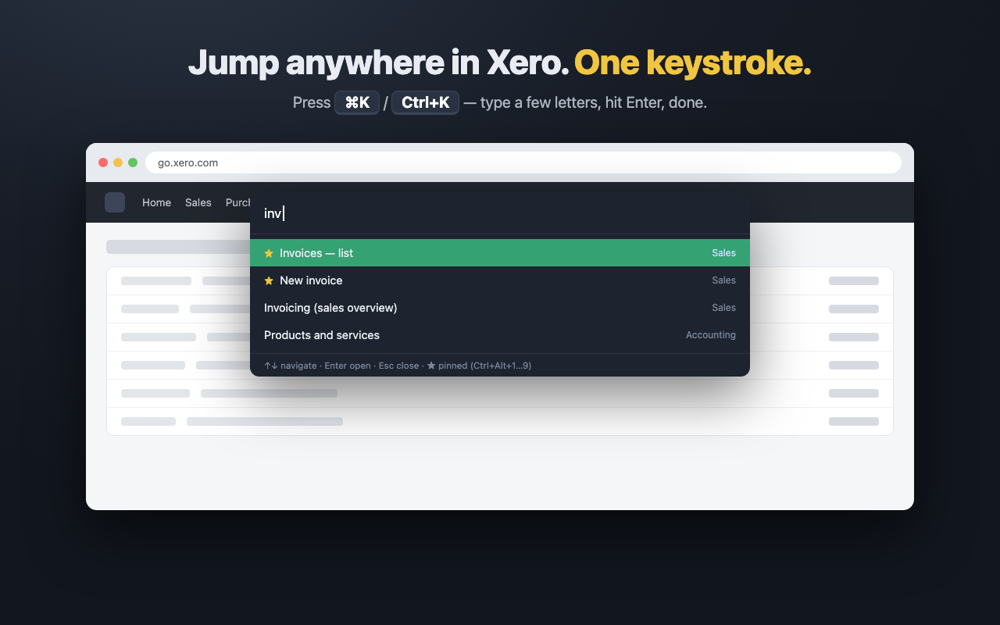
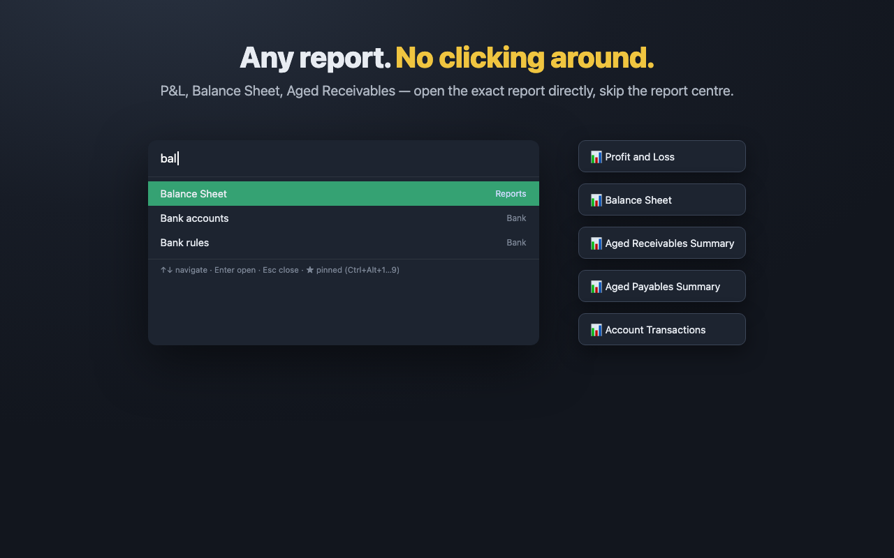

Keyboard shortcuts and a Ctrl+K command palette for Xero. Jump to any screen, report or organisation in one keystroke.
Chrome extension for accountants and bookkeepers who live in Xero all day.

Press Ctrl+K (⌘K on Mac) on any Xero page, type a few letters and land on any of ~40 screens, settings or reports in a second.
Pin the screens you open fifty times a day to Ctrl+Alt+1…9 and open them instantly, from anywhere in Xero.
P&L, Balance Sheet, Aged Receivables and more — open the exact report from the keyboard, skipping the report centre Xero's own search can't reach.
Work across several client organisations? Switch between them right from the palette — the fastest way to change organisations in Xero.
Prefer the mouse? A slim panel on the edge of every Xero page with all destinations and your pinned links on top.
On every Xero screen including the reports area, with any keyboard layout. Built on Xero's own stable URLs, not fragile page hacks.

$0
$12 / month · 7-day free trial